Oak Park Travel Guide
Most populous city in Illinois, and the third most populous city in the United States, and is one of the 40 largest urban areas in the world
Places to See in Oak Park
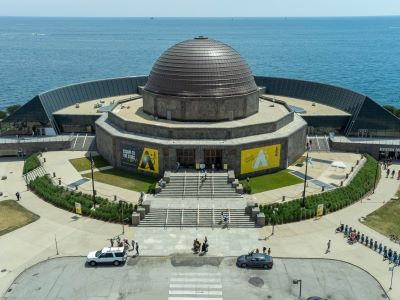
Moses8910, CC BY-SA 4.0, via Wikimedia Commons; Image Size Adjusted

Adler Planetarium
Museum dedicated to the study of astronomy and astrophysics, located on the shore of Lake Michigan in Chicago, and was the first planetarium in the United States
Edsel Little, CC BY-SA 2.0, via Wikimedia Commons; Image Size Adjusted
.jpg){kind=link}
Alinea
Restaurant awarded three stars from the Michelin Guide and is the only Chicago restaurant to retain a three-star status, Michelin's highest accolade
GualdimG, CC BY-SA 4.0, via Wikimedia Commons; Image Size Adjusted

Art Institute of Chicago
One of the oldest and largest art museums in the world with nearly 300,000 works of art
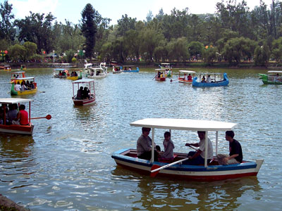
Sir Mildred Pierce, CC BY 2.0, via Wikimedia Commons; Image Size Adjusted

Burnham Park
Park situated along 6 miles (9.7 km) of Lake Michigan shoreline, and connects Grant Park at 14th Street to Jackson Park
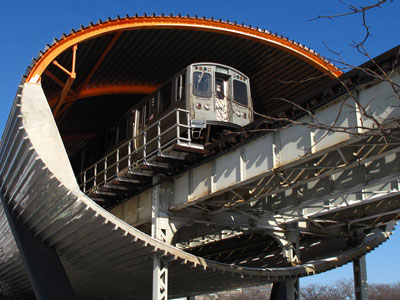
John Picken, CC BY 2.0, via Wikimedia Commons; Image Size Adjusted

Chicago L
The Chicago "L" (short for "elevated") is the rapid transit system serving the city of Chicago and some of its surrounding suburbs in Illinois

Alanscottwalker, CC BY-SA 3.0, via Wikimedia Commons; Image Size Adjusted
Chicago Lakefront Trail
18.5-mile-long partial shared use path located along the western shore of Lake Michigan in Chicago passes through and connects Chicago's four major lakefront parks along with various beaches and recreational amenities
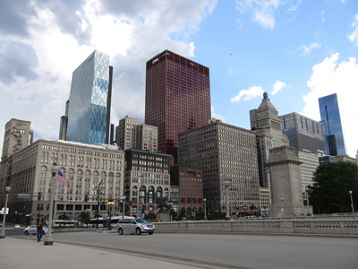
Ken Lund from Reno, Nevada, USA, CC BY-SA 2.0, via Wikimedia Commons; Image Size Adjusted
.jpg){kind=link}
Chicago Loop
Grinnell Point and Swiftcurrent Lake from the Many Glacier Hotel Jeff P from Berkeley, CA, USA, CC BY 2.0, via Wikimedia Commons; Image Size Adjusted
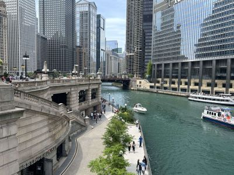
Jrbarc!, CC BY-SA 4.0, via Wikimedia Commons; Image Size Adjusted

Chicago Riverwalk
Multi-use public space on the south bank of the Chicago River, featuring bars, cafes and restaurants, and other amenities
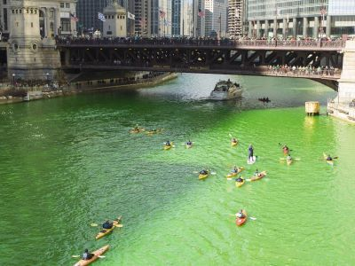
Jrbarc!, CC BY-SA 4.0, via Wikimedia Commons; Image Size Adjusted
Chicago St. Patrick's Day
Annual citywide celebration featuring the famous emerald-green river dyeing, a large downtown parade, Irish cultural traditions, live entertainment, and festive community events.
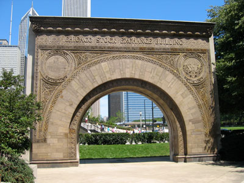
Jrbarc!, CC BY-SA 4.0, via Wikimedia Commons; Image Size Adjusted
Chicago Stock Exchange Arch
Preserved ornamental entrance arch from an 1893 architectural landmark, showcasing the distinctive design work of Adler and Sullivan and the legacy of the Chicago School of Architecture.
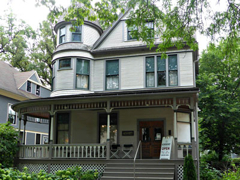
MauraWen, CC BY-SA 4.0, via Wikimedia Commons; Image Size Adjusted

Ernest Hemingway Birthplace
Restored Victorian home preserving the early years of a renowned American author through period furnishings, family artifacts, and guided historical tours.
David Wilson from Oak Park, Illinois, USA, CC BY 2.0, via Wikimedia Commons; Image Size Adjusted

Field Museum of Natural History
Popular natural-history museum due to its extensive scientific-specimen and artifact collections and is one of the largest such museums in the world
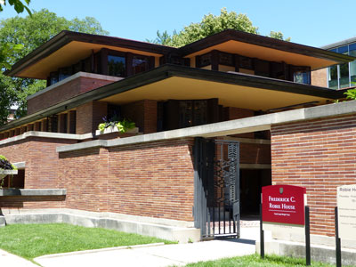
Stilfehler, CC BY-SA 4.0, via Wikimedia Commons; Image Size Adjusted

Frederick C Robie House
Building designed as a single family home by architect Frank Lloyd Wright and is renowned as the greatest example of Prairie School, the first architectural style considered uniquely American
Daniel Chester French, CC BY-SA 4.0, via Wikimedia Commons; Image Size Adjusted

Graceland Cemetery
Large historic garden cemetery where among the cemetery's 121 acres are the burial sites of several well-known Chicagoans
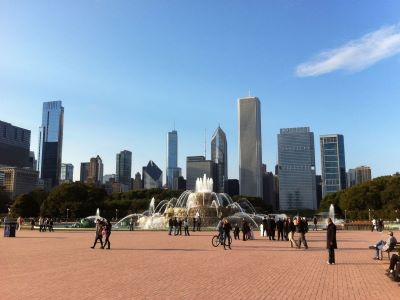
Adam sk, CC BY-SA 3.0, via Wikimedia Commons; Image Size Adjusted

Grant Park
Large urban park located within the city's central business district, featuring Millennium Park, Buckingham Fountain, the Art Institute of Chicago, and the Museum Campus
Michael Christensen, CC BY-SA 4.0, via Wikimedia Commons; Image Size Adjusted

Jackson Park
551.5-acre park located on the South Side of Chicago, is one of the largest and most historically significant parks in the city
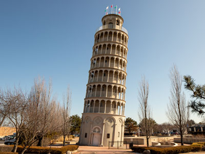
Paul R. Burley, CC BY-SA 4.0, via Wikimedia Commons; Image Size Adjusted

Leaning Tower of Niles
Replica of the Leaning Tower of Pisa
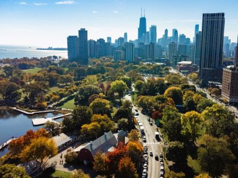
Sea Cow, CC BY-SA 4.0, via Wikimedia Commons; Image Size Adjusted
_4-1-22.jpg){kind=link}
Lincoln Park
1,208-acre park situated along Lake Michigan on the North Side of Chicago, is the second-most-visited city park in the United States, behind Central Park
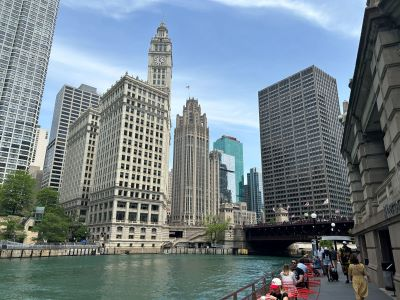
Ken Lund from Reno, Nevada, USA, CC BY-SA 2.0, via Wikimedia Commons; Image Size Adjusted
.jpg){kind=link}
Magnificent Mile
Lou Stejskal, CC BY 2.0, via Wikimedia Commons; Image Size Adjusted
Photograph: Conrad LeeSculpture: Lorado Taft (1860-1936), Public domain, via Wikimedia Commons; Image Size Adjusted

Midway Plaisance
Chicago public park on the South Side of Chicago, Illinois, running through the southern portion of the University of Chicago campus

; Image Size Adjusted
Millenium Park
Park located in the Loop community area of Chicago and features a variety of public art has become the number one tourist attraction in the Midwestern United States
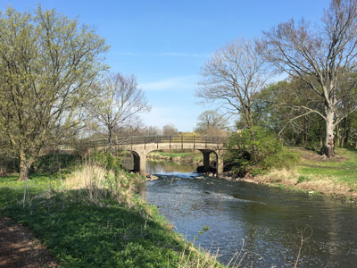
David Wilson, CC BY 2.0, via Wikimedia Commons; Image Size Adjusted

Morton Arboretum
Public garden, and outdoor museum covering 1,700 acres, includes cataloged collections of trees and other living plants, gardens, and restored areas
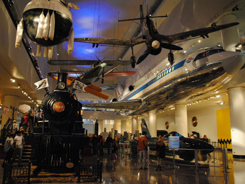
Leandro Neumann Ciuffo, CC BY 2.0, via Wikimedia Commons; Image Size Adjusted
.jpg){kind=link}
Museum of Science and Industry
Science museum featuring over 2,000 exhibits, displayed in 75 major halls
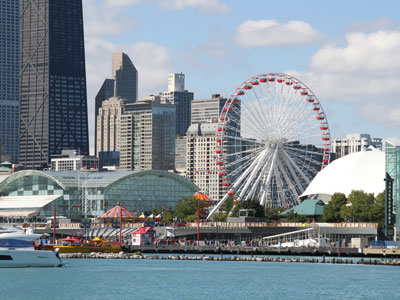
Tony Hisgett from Birmingham, UK, CC BY 2.0, via Wikimedia Commons; Image Size Adjusted
.jpg){kind=link}
Navy Pier
Over 50 acres of parks, gardens, shops, restaurants, family attractions and exhibition facilities and is one of the top destinations in the Midwestern United States
Daderot, CC0, via Wikimedia Commons; Image Size Adjusted

Oriental Institute Museum
Archaeology museum exhibiting an extensive collection of artifacts related to ancient civilizations

Matthew Dillon, CC BY 2.0, via Wikimedia Commons; Image Size Adjusted

Pullman National Monument
The first model, planned industrial community in the United States
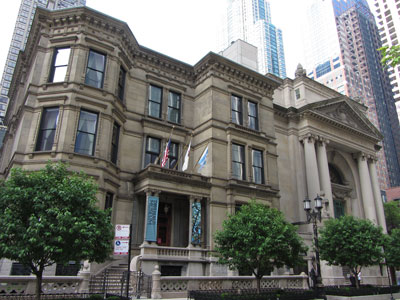
Richie Diesterheft, CC BY-SA 2.0, via Wikimedia Commons; Image Size Adjusted

Richard H Driehaus Museum
Museum displaying the prevailing design, architecture, and decorating tastes of Gilded Age America and the art nouveau era in permanent and special exhibitions
Bohao Zhao, CC BY 3.0, via Wikimedia Commons; Image Size Adjusted

Rockefeller Chapel
Gothic Revival chapel on the campus of the University of Chicago
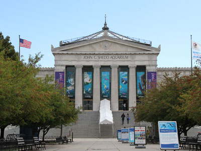
Tony Hisgett from Birmingham, UK, CC BY 2.0, via Wikimedia Commons; Image Size Adjusted
.jpg){kind=link}
Shedd Aquarium
Indoor public aquarium with its 5 million US gal aquarium was for some time the largest indoor facility in the world and today it holds about 32,000 animals
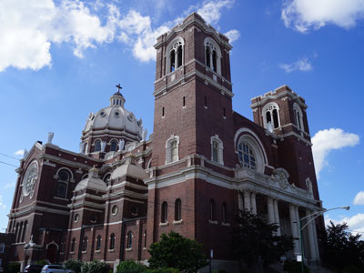
Goldnpuppy, CC BY-SA 4.0, via Wikimedia Commons; Image Size Adjusted

St Mary of Angels
Historic Roman Catholic church featuring monumental Baroque-inspired architecture, ornate interior artwork, soaring domes, and regularly scheduled worship services.
Brian Crawford from Oak Park, IL, USA, CC BY-SA 2.0, via Wikimedia Commons; Image Size Adjusted
.jpg){kind=link}
Unity Temple
Church designed by architect Frank Lloyd Wright, is considered to be one of Wright's most important structures dating from the first decade of the twentieth century
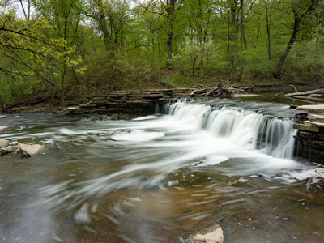
Joseph Gage from USA, CC BY-SA 2.0, via Wikimedia Commons; Image Size Adjusted
.jpg){kind=link}
Waterfall Glen Forest Preserve
Expansive nature preserve featuring woodlands, prairies, scenic overlooks, a waterfall, and a multi-use trail system popular for hiking, biking, horseback riding, and wildlife observation.
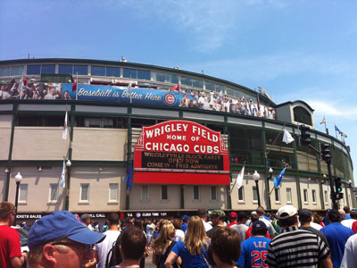
Lydia Fizz from Vancouver, Canada, CC BY 2.0, via Wikimedia Commons; Image Size Adjusted
.jpg){kind=link}
Wrigley Field
Historic Major League Baseball stadium known for its ivy-covered outfield walls, hand-operated scoreboard, distinctive architecture, and longstanding role in professional baseball.
Overview
Oak Park is a village just west of Chicago, best known as home to the largest concentration of Frank Lloyd Wright-designed buildings in the world and as the birthplace of author Ernest Hemingway.
Wright lived and worked in Oak Park for the first 20 years of his career, and his Home and Studio here, along with more than two dozen other Wright-designed buildings and his Unity Temple, form the core of the Frank Lloyd Wright-Prairie School of Architecture Historic District.
The Ernest Hemingway Birthplace and a dedicated museum trace the author's early life in the village, while a walkable downtown of shops, restaurants, and parks rounds out a visit.
This article uses material from the Wikipedia article "Oak Park, Illinois", which is released under the Creative Commons Attribution-Share-Alike License 3.0
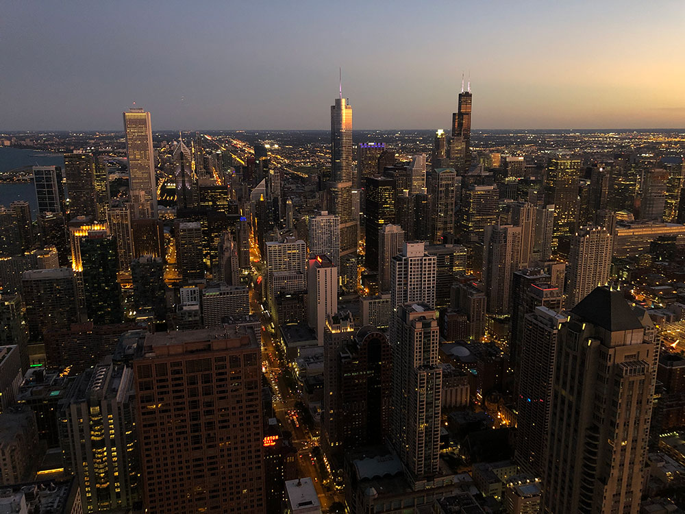

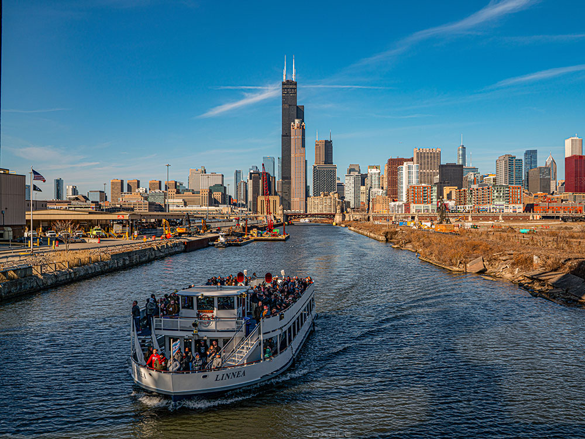

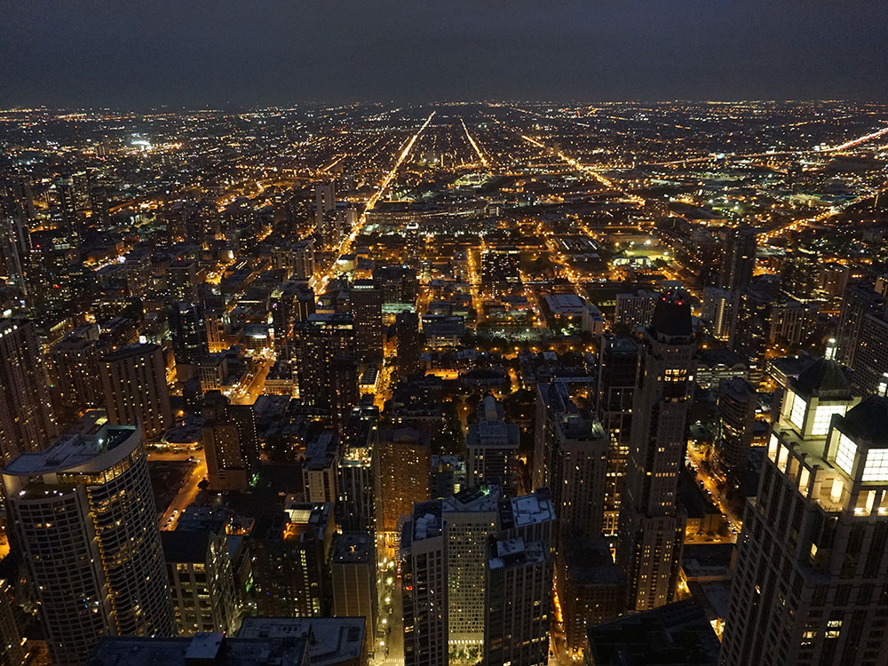
.jpg){kind=link}
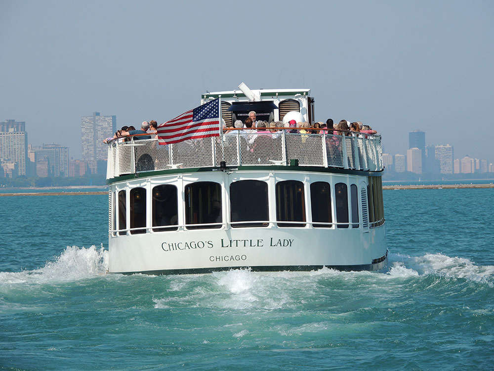

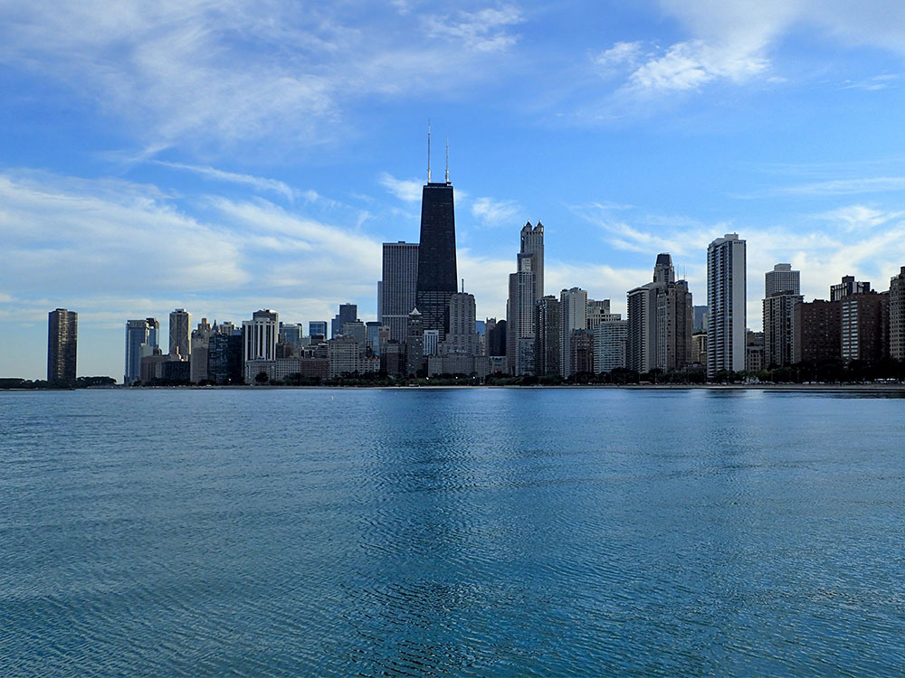

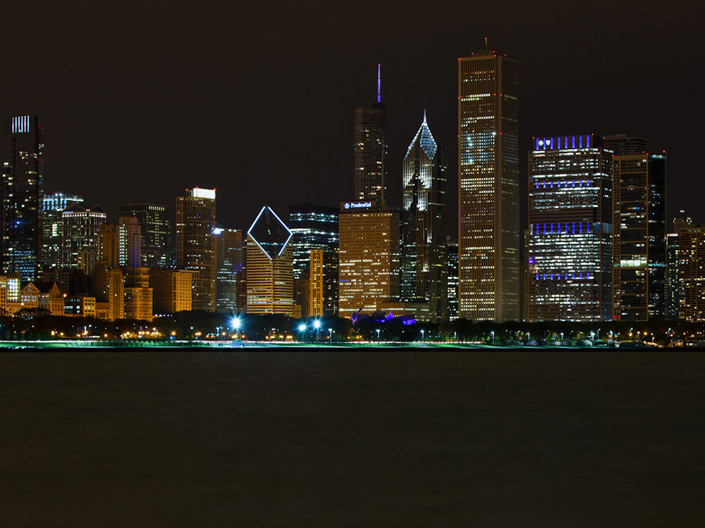

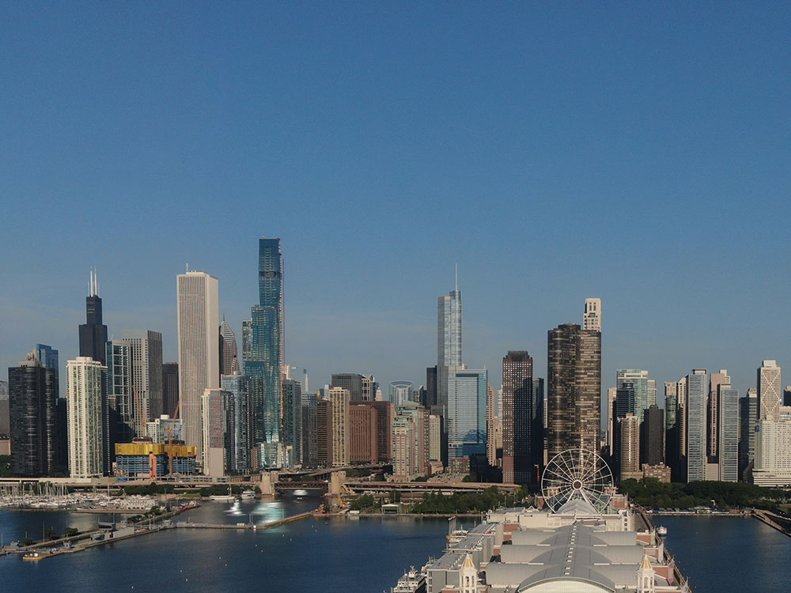
.jpg){kind=link}